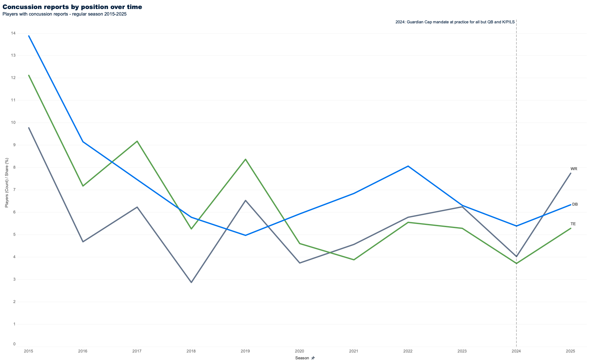

Total concussions
182Games & practices−16.9% vs previous season
Reported concussions are falling.
Is the NFL doing enough to protect players’ long-term brain health?
BY SVANTE JACOBSEN
Read the storyJunior Seau was a Hall of Fame linebacker. Dave Duerson was a Super Bowl-winning safety.
Both became prominent names in the debate about football and brain health after examinations of their donated brains revealed chronic traumatic encephalopathy, or CTE.[1]
In 2015, the film Concussion, starring Will Smith as Dr Bennet Omalu, brought the controversy surrounding football-related brain injury to a wider audience.[2]
In November 2025, Dallas Cowboys defensive end Marshawn Kneeland died by suicide. His family later announced that researchers had diagnosed stage I CTE following an examination after his death, once more bringing the issue into focus.[4]

Is the league making enough progress
in protecting players’ brains?
Across preseason and regular-season games and practices, reported NFL concussions fell from 275 in 2015 to 182 in 2024.
fewer reported concussions
2015 → 2024
Total concussions
182Games & practices−16.9% vs previous season
Game concussions
155Preseason & regular season−15.8% vs previous season
Practice concussions
27Preseason & regular season−22.9% vs previous season
Games and practices · Preseason and regular season · 2015–2024
The improvement also appears when accounting for the number of games. Regular-season concussions per game fell from 0.71 to 0.47, a reduction of 33.7%.
Regular season · 2015–2024
Despite that reduction, concussion remained prominent in weekly injury reports.
Between 2015 and 2025, it ranked fifth among the injury categories in this dataset, appearing in 2,874 player-week reports.
These are weekly report entries, rather than 2,874 separate concussion events. The same injury can appear in several weekly reports.
Regular-season player-week reports · 2015–2025
Fewer reported concussions are encouraging.
What do they tell us about long-term brain health?
A concussion count records reported injuries. It does not measure every head impact a player experiences.
This project does not include measurements of head impacts. Concussion data captures one important part of head trauma, but does not measure players’ total exposure.
Repeated head impacts can occur without resulting in a concussion. Research on CTE therefore looks at a player’s longer history of head trauma and its long-term effects.[3]
A decline in reported concussions cannot, on its own, demonstrate a decline in CTE.
For context, a separate autopsy study found CTE or features of CTE in 3.3% of individuals without documented contact-sport participation.[6]
Stage IV CTE was associated with approximately 4.5 times the odds of dementia compared with donors without CTE, after adjusting for age, in a separate brain-donor study.[7]
The injury-report data allows us to examine how concussion reports are distributed across positions, accounting for the number of rostered players in each group.
7.1%Defensive backs
6.2%Tight ends
5.5%Wide receivers
Share of each position group · Regular season · 2015–2025
Defensive backs had the highest share of player-seasons with a concussion report. Tight ends followed, with wide receivers third.
These data describe players appearing in regular-season concussion reports. They do not measure risk per snap or collision, or distinguish injuries sustained in games from those sustained in practice.
Even with those limits, the comparison helps identify where concussion reports are particularly common.

One answer to head-impact concerns is the Guardian Cap: a padded covering worn over the helmet.
At least 20% when both players wore caps, in laboratory testing reported by the NFL and NFLPA.[8]
An association found among affected position groups in a study of NFL preseason practices after a Guardian Cap requirement.[9]
The researchers could not attribute the reduction solely to the Guardian Cap, but it is encouraging nonetheless.
Guardian Caps entered NFL practice requirements gradually.[10]
Selected position groups were required to wear caps during part of preseason practice.
The requirement expanded across preseason and into regular-season contact practices. Running backs and fullbacks joined the covered groups.
DBs and WRs were added to contact-practice requirements. Players could also wear caps in games for the first time.
Reported practice concussions declined each year from 43 in 2020 to 27 in 2024. The final year saw a substantial fall: 35 to 27, a reduction of 22.9%. Coinciding with the inclusion of wide receivers and defensive backs in the contact-practice requirements. The most and third most prominent position group in the concussion injury reports shown earlier.
Total · 2015–2024
This decline overlaps with the introduction and expansion of Guardian Cap requirements. It is consistent with progress in practice safety, but the chart cannot establish how much of the change was caused by the caps.
Across games and practices combined, 2024 had the second-lowest concussion total in the dataset. Only 2020 was lower. A pandemic season without preseason games.
Even if the encouraging numbers cannot be solely attributed to increased adoption of Guardian Caps, the results support cautious optimism.
Guardian Caps remain optional during NFL games.
Players including Saints star wide receiver Chris Olave have chosen to wear them, making the additional protection increasingly visible.[11]
Reported concussions have fallen substantially during the period analysed. Practice concussions also declined as Guardian Cap requirements expanded. That is progress worth recognising. Although this analysis cannot determine exactly how much of the improvement was caused by the caps, laboratory testing found at least a 20% reduction in impact force when both players wore Guardian Caps. A separate study of NFL preseason practices found that the Guardian Cap requirement was associated with 54–62% lower concussion rates compared with the period before the requirement.

The NFL should move toward mandatory additional head-impact protection during games and contact practices, using Guardian Caps or alternatives that offer comparable or better protection.
This analysis is not saying that Guardian Caps prevent players from developing CTE. It should be considered part of a broader effort to reduce harmful head impacts. Alongside changes to rules, contact exposure and continued research.
Protecting players’ brains should remain a priority
long after the concussion numbers begin to improve.
Choose a season, compare positions and follow the trends in the full interactive dashboards.
This analysis combines official NFL-reported concussion totals for 2015–2024 with regular-season injury reports and roster data from nflverse for 2015–2025.
Official concussion totals count reported events. Weekly injury reports can contain the same injury in several reports, for example when an injury continues across multiple weeks.
Position comparisons count each player once per position group and season. Totals over multiple seasons represent player-seasons. A player can appear in more than one position group if their recorded position changes.
The practice data contains counts, without a denominator for practice exposure. Research on CTE and dementia is separate from the analytical datasets.